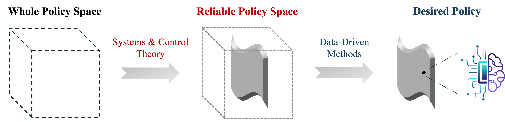

ResearchWe are living in a big data era - we are more than any time surrounded by applications of data-driven methods, e.g., large language models, recommender systems, and facial recognition. A common feature of these widespread applications is that the data-driven decision-making agents are living in a digital world in the sense that they do not have direct physical interactions with our environment. We, as human beings, are less sensitive to the possible mistakes made by them in these scenarios. However, there are many others in which the data-driven decision-making agents have to interact directly with our physical world, and mistakes can hardly be tolerated and may lead to non-invertible damages. For instance, in power grids, a single failure in one part might lead to chain reactions and finally result in the collapse of the whole grid (see 2025 Iberian Peninsula blackout). When applying data-driven methods to make decisions for physical systems, we often care more about whether the system will be run in a stable and safe manner, rather than only assessing how optimal these decisions are. Deep learning for autonomous driving serves as a good example, in which the top priority would be keeping the vehicle inside the safe region and avoiding collisions with the environment and other vehicles. Similar examples also include reinforcement learning for power systems control, where ensuring the safe operation of power systems (e.g., frequency and voltage are kept within safe limits) in both policy training and implementation is the primary requirement. While this issue has been well recognized in the contemporary machine learning community, most of the efforts are devoted to carefully architect loss functions by incorporating physical prior and then learn polices that tend to be reliable. However, little is known about where the reliability comes from. A fundamental question naturally arises:
As a researcher in systems & control, my primary goal is to bridge this gap by connecting systems & control theory and data-driven methods. Indeed, systems & control theory provides classical and powerful tools to characterize the relationships between policy property and system performance in terms of stability, safety, and robustness, etc. These classical concepts potentially bring exciting perspectives in rethinking the policy design in combination with newly emerged data-driven techniques. In the past five years, I aimed to answer the question raised above using different tools from systems & control theory, ranging from behavioral systems theory to Lyapunov stability, safety-critical control, robust control theory, and so on. Then, I applied these understandings in various data-driven policy learning setups, e.g., direct data-driven learning and machine learning, to design efficient and reliable decision-making mechanisms. The below figure illustrates the core idea of my PhD thesis. My research works can be classified into two categories, according to two different perspectives to identify the reliable policy space. One on direct data-driven learning, where the reliable policy space is identified using behavioral system methods and it seeks for a unified and general framework tackling with general complex nonlinear systems. Another on machine learning, where the identification is performed using state-space control-theoretical methods and designs are subject to specific systems models. In this category, I focus on power system application examples.  Z. Yuan, “Data-Driven Learning and Control: Formal Guarantees and Applications to Power Networks,” Ph.D. thesis, University of California, San Diego, 2025. From behavioral systems theory to direct data-driven learning for complex systems
From state-space control theory to machine learning for power systemsFrequency control
Voltage control
What's happening nowSTAY TUNED!!! |